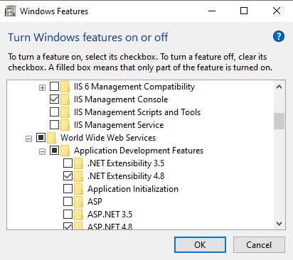

Troubleshooting Upgrades
Before you start - be safe!
Before you begin a Gemini upgrade you should follow these steps
- Do a Full backup of your database. The upgrade can change table structures, modify and insert data, and drop redundant elements. It is not something to be manually undone.
- Make a copy of your website. You will need the connection string and httperrors section from it after the upgrade.
- The connection string has the database username/password, name and physical location. HttpErrors has the SSL redirect from http to https if you have implemented this (and you probably should have).
- Do not forget that if you use Windows Auth you need to edit web.config after the upgrade and set <authentication="Windows">. This setting is cAsE sensitive!
- Do NOT just copy your old web.config back over the one the upgrade will install. The contents of web.config can also change and if you undo some of its settings Gemini will not work.
- Stop the App Pool for Gemini in IIS.
- You cannot have users in the system if the database structure is being changed and data is being modified. The consequences of a conflict are unknown and unknowable!
- While the App Pool is running, so too are Gemini background Apps. They too must be stopped, and stopping the App Pool is the way to kill them all.
- While the App Pool is running, IIS worker processes will have files open that the upgrade will try to overwrite. If this is the case, the overwriting will fail and the upgrade will fail.
- Delete all entries in the System Log. You can do this through the UI, or if you are on-premise with DB access you can execute truncate table gemini_systemlog;
- If you can, ensure that there are no unread emails in any mailbox(es) Gemini processes. Ideally, the mailboxes should be empty. We accept that this is not always possible.
- The standard upgrade instructions does not list this, but GEMINAI recommends it:
- Once the App Pool is stopped, on the web server navigate to \App_Data\Apps where you should find folders with names like Item_Repeater-CEF9D547-5106-49D6-8B08-F753AE1E23BF.
- Delete all these GUID-named folders. Do NOT delete the zip files. The zip files contain Apps that Gemini will deploy and you may have Apps that are not in the base Gemini set.
The latest version of Gemini is 7.3 (sadly GEMINAI is not yet ready for release), and you can find full upgrade instructions here.
Typical Problem FAQ
After the upgrade, apps are missing or the App tab in the admin section is missing.
This is because your apps have failed to deploy. The reason for this is almost certainly File System permissions and you have not followed Step 5 of the Upgrade Instructions - Set Folder Permissions.
We created a new website and now we get errors
It is quite likely that your new website in IIS has subtly different settings from your old website. Please check the following:
- The you have either Forms Authentication or Windows Authentication enabled in IIS and this must match what you have set in the <authentication> section of web.config.
- If you are using Forms Authentication then in IIS you MUST have Anonymous Authentication enabled in IIS. Until your user enters a username/password, they are 'Anonymous'.
If the above does not resolve the problem, edit web.config, and switch off custom errors like this: <customErrors mode="Off" defaultRedirect="~/500">. This is cAsE sensitive. Errors will now be thrown to the page to help you diagnose the problem.
We moved Gemini (or a bit of it) to a different server/cloud and it's not working
- Check that the .Net version on the web server meets the pre-requisite minimum.
- Check that you have all the IIS pre-requisites for your website. In the Control panel, select "Turn Windows Features On or Off" and check out which World Wide Web/Internet services have been installed.

- Check the connectivity between the web server and the DB server. If this is failing it should be shown on the page if you switch off custom errors in web.config.
- Unless you are seeing a Gemini page, any login challenge that you get is being thrown up by your network and is an internal connectivity problem, not a Gemini problem.
There is more to come, I'm still writing this page, but I'll soon be done...